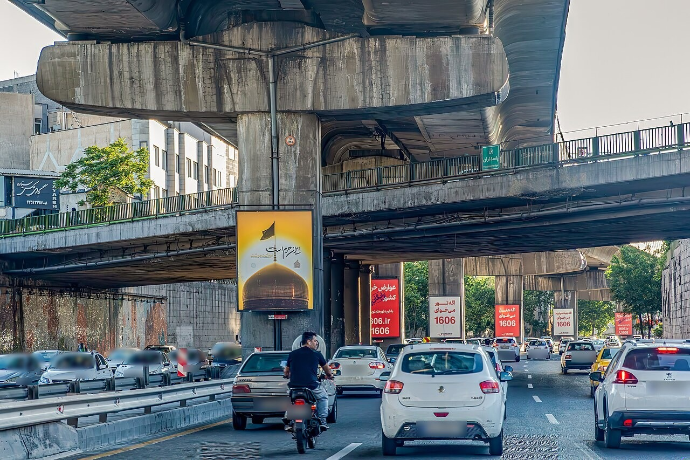
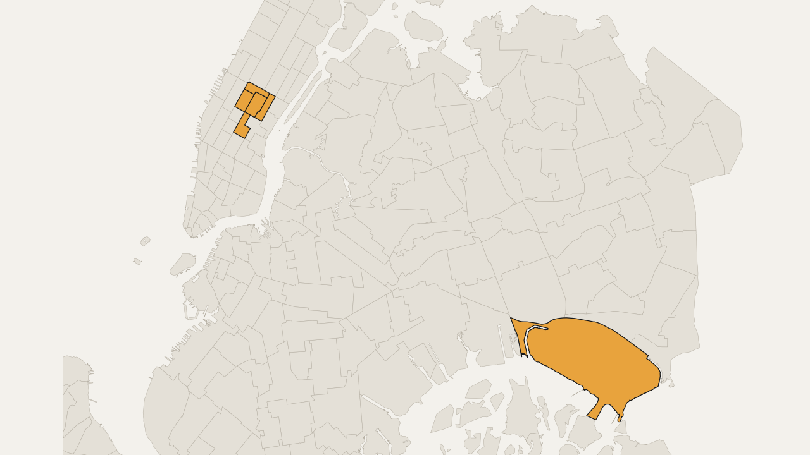
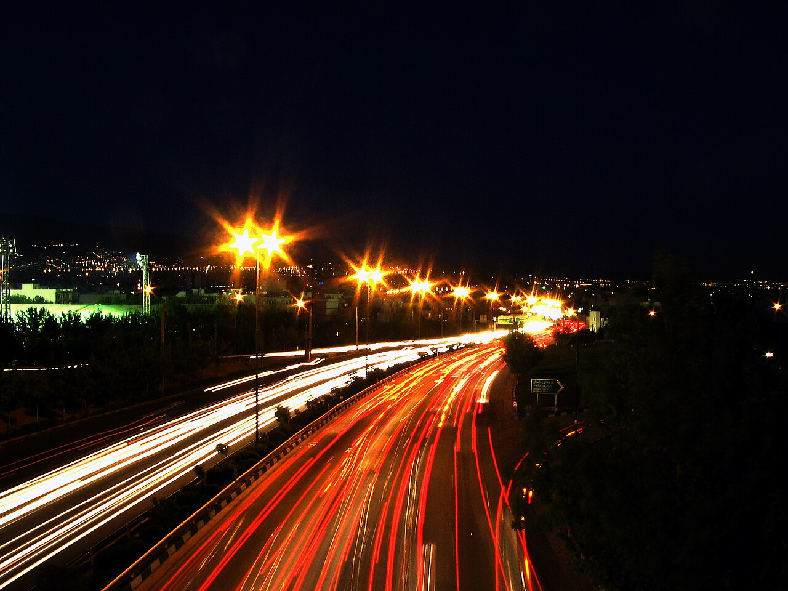

<!-- HMD-009 · deck source. Build: make decks  →  deck-fa.html + deck-en.html
     Every visible string is a pair <t-fa>…</t-fa><t-en>…</t-en>; text outside a pair is shown in both decks. -->

<style>
/* toy road graph (beats 6 and 7): viewBox 1300×320, shown at up to 1664px wide */
.chart.road{max-width:1300px}
.chart.road line{stroke:#A9A49A;stroke-width:4}
.chart.road line.msg{stroke:var(--amber);stroke-width:7}
.chart.road circle{fill:var(--paper);stroke:var(--ink);stroke-width:3}
.chart.road circle.hot{stroke:var(--amber);stroke-width:8}
.chart.road circle.jam{fill:#C9C4B8}
.chart.road text{font-size:26px;font-weight:700}
.chart.road text.end{font-size:24px;font-weight:400;fill:var(--muted)}
/* real photos and the real-data figures (beats 1, 7, 13) */
.duo{display:grid;grid-template-columns:auto 1fr;gap:56px;align-items:center}
.duo.even{grid-template-columns:1fr 1fr;gap:40px;align-items:start}
.photo{display:block;margin:0;max-width:100%}
.photo img{display:block;height:520px;width:auto;max-width:100%;border-radius:4px}
.photo.strip img{height:300px;width:100%;object-fit:cover}
.photo.map img{height:400px;width:auto;max-width:100%;border:1px solid var(--line)}
.photo figcaption{margin-top:10px;font-size:20px;line-height:1.35;color:var(--muted)}
.night .photo figcaption{color:var(--muted-night)}
.duo .cols{flex-direction:column;gap:36px}
.chart.hours{max-width:900px}
.chart.hours .grid{stroke:var(--line);stroke-width:2}
.chart.hours .band{fill:var(--amber);opacity:.28}
.chart.hours .med{fill:none;stroke:var(--ink);stroke-width:6;stroke-linejoin:round}
.chart.hours .dot{fill:var(--amber);stroke:var(--ink);stroke-width:3}
.chart.hours .ax{font-size:26px;fill:var(--muted)}
.figcap{margin:8px 0 0;font-size:26px;line-height:1.4;color:var(--muted)}
.figcap b{color:var(--ink)}
</style>

<section class="cover">
<h1><t-fa>گوگل‌مپس از کجا می‌فهمد <em>کی</em> می‌رسی؟</t-fa><t-en>How does Google Maps know <em>when</em> you will arrive?</t-en></h1>
<p class="promise"><t-fa>از توضیح DeepMind تا هزاران سفر واقعی تاکسی در نیویورک: چهار روش پیش‌بینی زمان رسیدن در یک مسابقه.</t-fa><t-en>From DeepMind's description to thousands of real New York taxi trips: four ways to predict arrival time, in one race.</t-en></p>
</section>

<section class="frame night" id="beat-1" data-start="0">
<h1><t-fa>زمان رسیدنت پیش‌بینیِ ترافیکی است که <em>هنوز نیامده</em>.</t-fa><t-en>Your ETA is a forecast of traffic that <em>doesn't exist yet</em>.</t-en></h1>
<div class="duo">
<figure class="photo"><figcaption><t-fa>عکس: Ninara · CC BY 2.0 · چهره‌ها و پلاک‌ها محو شده</t-fa><t-en>Photo: Ninara · CC BY 2.0 · faces and plates blurred</t-en></figcaption></figure>
<div class="cols">
<div><span><t-fa>الان · ۰۷:۳۰</t-fa><t-en>Now · 07:30</t-en></span><b class="word"><t-fa>خلوت</t-fa><t-en>Clear</t-en></b><p><t-fa>خیابان جلوی تو</t-fa><t-en>The street in front of you</t-en></p></div>
<div class="hi"><span><t-fa>۱۰ دقیقهٔ دیگر</t-fa><t-en>In 10 minutes</t-en></span><b class="word"><t-fa>صف؟</t-fa><t-en>A queue?</t-en></b><p><t-fa>تقاطعی که به آن می‌رسی</t-fa><t-en>The junction you will reach</t-en></p></div>
</div>
</div>
<footer><t-fa>عکس: ترافیک زیر پل‌های تهران، ۱۸ مه ۲۰۲۴ · Wikimedia Commons · بدون دادهٔ اپ</t-fa><t-en>Photo: traffic under Tehran's elevated roads, 18 May 2024 · Wikimedia Commons · no app data</t-en></footer>
<aside class="notes"><t-fa><b>ترافیکی که هنوز نیامده</b><p>[B-ROLL CUE] عکس واقعی ترافیک تهران (Ninara، CC BY 2.0، چهره‌ها و پلاک‌ها را ما محو کرده‌ایم؛ media/CREDITS.md). بعد انیمیشن ساده: خیابان جلوی ماشین سبز، تقاطع بعدی خاکستری با برچسب «۱۰ دقیقهٔ بعد». کات روی «من محمدم…».</p><p>در یک جمله: زمان رسیدن، پیش‌بینیِ آینده است، نه عکسِ الان.</p></t-fa><t-en><b>Traffic that has not arrived yet</b><p>[B-ROLL CUE] A real photo of Tehran traffic (Ninara, CC BY 2.0, faces and plates blurred by us; media/CREDITS.md). Then a simple animation: the street ahead of the car green, the next junction grey with a "+10 min" label. Cut on "I'm Mohammad…".</p><p>In one line: arrival time is a forecast of the future, not a snapshot of now.</p></t-en></aside>
</section>

<section class="frame paper" id="beat-2" data-start="41">
<p class="kicker"><t-fa>یک عدد، یک تصمیم</t-fa><t-en>One number, one decision</t-en></p>
<h1><t-fa>یک عدد. یک تصمیم <em>هر روزه</em>.</t-fa><t-en>One number. One <em>daily</em> decision.</t-en></h1>
<div class="cards">
<div><b><t-fa>امتحان ساعت ۸:۰۰</t-fa><t-en>Exam at 8:00</t-en></b><t-fa>الان راه بیفتم یا صبحانه بخورم؟</t-fa><t-en>Leave now or have breakfast?</t-en></div>
<div class="hi"><b><t-fa>تاکسی اینترنتی</t-fa><t-en>Ride-hail</t-en></b><t-fa>راننده ۷ دقیقه · سفر ۲۲ دقیقه</t-fa><t-en>Driver 7 min · trip 22 min</t-en></div>
<div><b><t-fa>جلسهٔ ساعت ۹:۰۰</t-fa><t-en>Meeting at 9:00</t-en></b><t-fa>زنگ بزنم بگویم دیر می‌رسم یا نه؟</t-fa><t-en>Call ahead to say I'll be late, or not?</t-en></div>
</div>
<p class="caption"><t-fa>این ۲۲ دقیقه از کجا آمده؟</t-fa><t-en>Where did these 22 minutes come from?</t-en></p>
<footer><t-fa>تصمیم‌های روزمره · بدون لوگوی اپ</t-fa><t-en>Everyday decisions · no app logos</t-en></footer>
<aside class="notes"><t-fa><b>یک عدد، یک تصمیم</b><p>[CAMERA CHANGE] نمای مدیوم راوی. روی دک سه کارت موقعیت روزمره: امتحان ساعت ۸ · تاکسی اینترنتی · جلسهٔ ساعت ۹. بدون لوگوی اپ‌ها.</p><p>در یک جمله: ETA عددی است که هر روز بر اساسش تصمیم می‌گیریم، پس ارزش دارد بدانیم از کجا می‌آید.</p></t-fa><t-en><b>One number, one decision</b><p>[CAMERA CHANGE] Medium shot of the narrator. Three everyday-situation cards on the deck: exam at 8 · ride-hail · meeting at 9. No app logos.</p><p>In one line: the ETA is a number we make decisions on every day, so it is worth knowing where it comes from.</p></t-en></aside>
</section>

<section class="frame paper" id="beat-3" data-start="87">
<p class="kicker"><t-fa>اول حدس بزن</t-fa><t-en>Guess first</t-en></p>
<div class="stat"><b><t-fa>تا ۵۰٪</t-fa><t-en>Up to 50%</t-en></b><span><t-fa>دقیق‌تر شدن ETA زنده در جاهایی مثل برلین، جاکارتا، سائوپائولو، سیدنی، توکیو و واشنگتن</t-fa><t-en>more accurate live ETAs in places like Berlin, Jakarta, São Paulo, Sydney, Tokyo and Washington D.C.</t-en></span></div>
<p class="sub"><t-fa>پیش از آن: دقیق برای بیش از ۹۷٪ سفرها · مقالهٔ CIKM 2021: بیش از ۴۰٪ کاهش پیامدهای منفی ETA در شهرهایی مثل سیدنی</t-fa><t-en>Before: accurate for over 97% of trips · CIKM 2021 paper: over 40% fewer negative ETA outcomes in cities like Sydney</t-en></p>
<p class="tag"><t-fa>توضیح سال ۲۰۲۰ از یک سامانهٔ تاریخی · سامانهٔ خصوصی امروز منتشر نشده</t-fa><t-en>A 2020 description of a historical system · today's private system is not published</t-en></p>
<footer><t-fa>R15 · بلاگ DeepMind، ۳ سپتامبر ۲۰۲۰ · Derrow-Pinion و همکاران، CIKM 2021</t-fa><t-en>R15 · DeepMind blog, 3 Sep 2020 · Derrow-Pinion et al., CIKM 2021</t-en></footer>
<aside class="notes"><t-fa><b>منبع</b><p>[UNEXPECTED STAT] اول سؤال: «حدس بزن: مدل جدید چقدر بهتر شد؟» سه ثانیه مکث. بعد کارت منبع (بلاگ DeepMind، ۳ سپتامبر ۲۰۲۰) با «بیش از ۹۷٪ سفرها دقیق (پیش از آن)» و «تا ۵۰٪» و فهرست شهرها: برلین · جاکارتا · سائوپائولو · سیدنی · توکیو · واشنگتن.</p><p>در یک جمله: گوگل گزارش داده با یک مدل تازه، ETA را در بعضی شهرها تا پنجاه درصد دقیق‌تر کرده.</p></t-fa><t-en><b>The source</b><p>[UNEXPECTED STAT] Question first: "Guess: how much better did the new model get?" Pause three seconds. Then the source card (DeepMind blog, 3 Sep 2020) with "over 97% of trips accurate (before)", "up to 50%" and the list of cities: Berlin · Jakarta · São Paulo · Sydney · Tokyo · Washington D.C.</p><p>In one line: Google reports that a new model made ETAs up to fifty percent more accurate in some cities.</p></t-en></aside>
</section>

<section class="frame paper" id="beat-4" data-start="154">
<p class="kicker"><t-fa>تاریخچه و الان</t-fa><t-en>History and now</t-en></p>
<h1><t-fa>دو مادهٔ اصلی: تاریخچه و <em>الان</em>.</t-fa><t-en>Two ingredients: history and <em>now</em>.</t-en></h1>
<div class="cols">
<div><span><t-fa>مادهٔ ۱ · تاریخچه</t-fa><t-en>Ingredient 1 · History</t-en></span><b class="word"><t-fa>دوشنبه ۸:۰۰</t-fa><t-en>Mon 8:00</t-en></b><p><t-fa>یک روز معمولی چه شکلی است</t-fa><t-en>What a normal day looks like</t-en></p></div>
<div class="hi"><span><t-fa>مادهٔ ۲ · زنده: دادهٔ مکانیِ جمع‌شده</t-fa><t-en>Ingredient 2 · Live: aggregate location data</t-en></span><b class="word"><t-fa>۹۹ گوشی در یک گاری</t-fa><t-en>99 phones in a handcart</t-en></b><p><t-fa>برلین، ۲۰۲۰: سیمون وکرت ۹۹ گوشی دست‌دوم را در خیابان کشید و در گوگل‌مپس خیابانِ سبز قرمز شد.</t-fa><t-en>Berlin, 2020: Simon Weckert pulled 99 second-hand phones down the street, and in Google Maps a green street turned red.</t-en></p></div>
</div>
<p class="tag"><t-fa>…ولی به تکهٔ ششم ۱۵ دقیقهٔ دیگر می‌رسی · DeepMind: دادهٔ زنده ترافیکِ ۱۰، ۲۰ یا حتی ۵۰ دقیقه بعدِ مسیر را نشان نمی‌دهد</t-fa><t-en>…but you reach segment 6 in 15 minutes · DeepMind: live data does not show the traffic 10, 20 or even 50 minutes into a drive</t-en></p>
<footer><t-fa>R15 · بلاگ DeepMind، ۳ سپتامبر ۲۰۲۰ · Google Maps 101، ۳ سپتامبر ۲۰۲۰ · simonweckert.com، Google Maps Hacks</t-fa><t-en>R15 · DeepMind blog, 3 Sep 2020 · Google Maps 101, 3 Sep 2020 · simonweckert.com, Google Maps Hacks</t-en></footer>
<aside class="notes"><t-fa><b>تاریخچه و الان</b><p>[GRAPHIC] دو ستون. ستون دوم روی جملهٔ وکرت روشن شود. عکس و فیلم وکرت مجوز آزاد ندارد (CREDITS.md، «دانلود نشد»)؛ فقط این کارت متنی، مگر اجازه گرفته باشی. خط پایین: «ولی ۱۵ دقیقهٔ دیگر می‌رسی».</p><p>در یک جمله: تاریخچه روز معمولی را می‌داند، الان امروز را؛ هیچ‌کدام به‌تنهایی آینده را نمی‌داند.</p></t-fa><t-en><b>History and now</b><p>[GRAPHIC] Two columns. The second lights up on the Weckert line. Weckert's photos and video carry no free licence (CREDITS.md, "not downloaded"); use only this text card unless you have permission. Bottom line: "but you arrive in 15 min".</p><p>In one line: history knows a normal day, now knows today; neither knows the future on its own.</p></t-en></aside>
</section>

<section class="frame paper" id="beat-5" data-start="218">
<p class="kicker"><t-fa>مادهٔ سوم: همسایه‌ها</t-fa><t-en>Ingredient 3: neighbours</t-en></p>
<h1><t-fa>ترافیک مثل موج <em>رو به عقب</em> می‌رود.</t-fa><t-en>Traffic jams travel <em>backwards</em>.</t-en></h1>
<div class="tokens mono" dir="ltr"><i>R1</i><i>R2</i><i>R3</i><i>R4</i><i class="off">R5</i><i class="hi">R6</i><i class="hi">R7</i><i class="hi">R8</i><i>D</i></div>
<p class="sub"><t-fa>صف از گلوگاه رو به تو بزرگ می‌شود. وضعیت R4 در ده دقیقهٔ بعد، الان در R5 و R6 نوشته شده.</t-fa><t-en>The queue grows from the bottleneck toward you. R4 in ten minutes is written in R5 and R6 now.</t-en></p>
<p class="caption"><t-fa>اگر این‌جور باز کردن الگوریتم‌های روزمره به کارت می‌آید، هومودین هر هفته یکی را باز می‌کند.</t-fa><t-en>If this kind of opening up of everyday algorithms is useful to you, Homodyne opens one every week.</t-en></p>
<footer><t-fa>فیزیک ترافیک · طرح توضیحی، نه داده</t-fa><t-en>Traffic physics · an illustration, not data</t-en></footer>
<aside class="notes"><t-fa><b>موج ترافیک</b><p>[CAMERA CHANGE] کات به نمای نزدیک برای CTA. بعد [B-ROLL CUE] نمای هوایی (ضبط خودمان یا آرشیو با مجوز؛ فعلاً نداریم) از صفی که از یک خروجی به عقب کش می‌آید؛ روی دک: نوارهای قرمز که هر چند ثانیه یک تکه عقب‌تر می‌روند.</p><p>در یک جمله: آیندهٔ یک خیابان، در وضعیت الانِ همسایه‌هایش نوشته شده.</p></t-fa><t-en><b>The traffic wave</b><p>[CAMERA CHANGE] Cut to a close-up for the CTA. Then [B-ROLL CUE] an aerial shot (our own footage or licensed archive; none yet) of a queue stretching back from an exit; on the deck: red bars that move one segment further back every few seconds.</p><p>In one line: a street's future is written in its neighbours' present.</p></t-en></aside>
</section>

<section class="frame paper" id="beat-6" data-start="271">
<p class="kicker"><t-fa>گراف و پیام</t-fa><t-en>Graph and messages</t-en></p>
<h1><t-fa>هر تکهٔ خیابان به <em>همسایه‌هایش</em> گوش می‌دهد.</t-fa><t-en>Each segment listens to its <em>neighbours</em>.</t-en></h1>
<div dir="ltr"><svg class="chart road" viewBox="0 0 1300 320" role="img" aria-label="Toy road graph: 8 route segments, 4 side streets, a bottleneck">
<line x1="80" y1="200" x2="220" y2="200"/><line x1="220" y1="200" x2="360" y2="200"/><line x1="360" y1="200" x2="500" y2="200"/><line x1="500" y1="200" x2="640" y2="200"/><line x1="640" y1="200" x2="780" y2="200"/><line x1="780" y1="200" x2="920" y2="200"/><line x1="920" y1="200" x2="1060" y2="200"/><line x1="1060" y1="200" x2="1240" y2="200"/>
<line x1="360" y1="78" x2="360" y2="200"/><line x1="640" y1="78" x2="640" y2="200"/><line x1="920" y1="78" x2="920" y2="200"/><line x1="1060" y1="78" x2="1060" y2="200"/>
<line class="msg" x1="612" y1="200" x2="530" y2="200"/><line class="msg" x1="388" y1="200" x2="470" y2="200"/>
<circle cx="80" cy="200" r="26"/><circle cx="220" cy="200" r="26"/><circle cx="360" cy="200" r="26"/><circle class="hot" cx="500" cy="200" r="26"/><circle cx="640" cy="200" r="26"/><circle cx="780" cy="200" r="26"/><circle cx="920" cy="200" r="26"/><circle cx="1060" cy="200" r="26"/><circle class="jam" cx="1240" cy="200" r="26"/>
<circle cx="360" cy="60" r="18"/><circle cx="640" cy="60" r="18"/><circle cx="920" cy="60" r="18"/><circle cx="1060" cy="60" r="18"/>
<text x="80" y="264" text-anchor="middle">R1</text><text x="220" y="264" text-anchor="middle">R2</text><text x="360" y="264" text-anchor="middle">R3</text><text x="500" y="264" text-anchor="middle">R4</text><text x="640" y="264" text-anchor="middle">R5</text><text x="780" y="264" text-anchor="middle">R6</text><text x="920" y="264" text-anchor="middle">R7</text><text x="1060" y="264" text-anchor="middle">R8</text><text x="1240" y="264" text-anchor="middle">D</text>
<text x="388" y="69">S3</text><text x="668" y="69">S5</text><text x="948" y="69">S7</text><text x="1088" y="69">S8</text>
<text class="end" x="54" y="310"><t-fa>خانه</t-fa><t-en>Home</t-en></text><text class="end" x="1270" y="310" text-anchor="end"><t-fa>محل کار، گلوگاه</t-fa><t-en>Office, bottleneck</t-en></text>
</svg></div>
<p class="caption"><t-fa>پیام‌رسانی: دور اول از همسایه‌ها، دور دوم از همسایه‌های همسایه.</t-fa><t-en>Message passing: round one from the neighbours, round two from the neighbours' neighbours.</t-en></p>
<p class="tag"><t-fa>supersegment (اصطلاح DeepMind): چند تکهٔ مجاور با حجم ترافیک مشترکِ قابل‌توجه</t-fa><t-en>Supersegment (DeepMind's term): adjacent segments that share significant traffic volume</t-en></p>
<footer><t-fa>R15 · بلاگ DeepMind، ۳ سپتامبر ۲۰۲۰ · supersegments · گراف: طرح توضیحی</t-fa><t-en>R15 · DeepMind blog, 3 Sep 2020 · supersegments · graph: an illustration</t-en></footer>
<aside class="notes"><t-fa><b>گراف و پیام</b><p>[GRAPHIC] انیمیشن گراف: ۸ دایرهٔ مسیر (R1 تا R8) + ۴ خیابان فرعی + گلوگاه D. دور اول: هر دایره از همسایه‌های مستقیمش «پیام» می‌گیرد (فلش‌های کهربایی). دور دوم: از همسایه‌های همسایه. زیرش: تعریف supersegment از DeepMind.</p><p>در یک جمله: شبکهٔ عصبی گرافی به هر تکه خیابان یاد می‌دهد از همسایه‌هایش خبر بگیرد.</p></t-fa><t-en><b>Graph and messages</b><p>[GRAPHIC] Graph animation: 8 route circles (R1 to R8) + 4 side streets + bottleneck D. Round one: each circle receives a "message" from its direct neighbours (amber arrows). Round two: from the neighbours' neighbours. Below: DeepMind's definition of a supersegment.</p><p>In one line: a graph neural network teaches every road segment to get news from its neighbours.</p></t-en></aside>
</section>

<section class="frame paper" id="beat-7" data-start="346">
<p class="kicker"><t-fa>دادهٔ واقعی · نیویورک · مارس و آوریل ۲۰۲۶</t-fa><t-en>Real data · New York · Mar–Apr 2026</t-en></p>
<h1><t-fa>۱۱٬۸۰۹ سفر تاکسی: میدتاون ← JFK</t-fa><t-en>11,809 NYC taxi trips: Midtown → JFK</t-en></h1>
<div class="duo even">
<figure class="photo map"><figcaption><t-fa>منطقه‌های تاکسی TLC؛ کهربایی: میدتاون (۵ منطقه) و فرودگاه JFK</t-fa><t-en>TLC taxi zones; amber: Midtown (5 zones) and JFK Airport</t-en></figcaption></figure>
<div>
<div dir="ltr">
<svg class="chart hours" viewBox="0 0 1300 420" role="img" aria-label="Midtown to JFK taxi trip minutes by weekday departure hour">
<line class="grid" x1="90" y1="360" x2="1270" y2="360"/><text class="ax" x="76" y="369" text-anchor="end">0</text>
<line class="grid" x1="90" y1="258" x2="1270" y2="258"/><text class="ax" x="76" y="267" text-anchor="end">30</text>
<line class="grid" x1="90" y1="156" x2="1270" y2="156"/><text class="ax" x="76" y="165" text-anchor="end">60</text>
<line class="grid" x1="90" y1="54" x2="1270" y2="54"/><text class="ax" x="76" y="63" text-anchor="end">90</text>
<polygon class="band" points="90,235 149,237 208,213 267,176 326,167 385,130 444,110 503,108 562,117 621,116 680,108 739,82 798,62 857,34 916,36 975,53 1034,107 1093,158 1152,178 1211,167 1270,151 1270,243 1211,238 1152,240 1093,233 1034,213 975,172 916,162 857,176 798,180 739,186 680,193 621,207 562,204 503,200 444,210 385,222 326,238 267,247 208,268 149,270 90,270"/>
<polyline class="med" points="90,258 149,255 208,247 267,222 326,209 385,182 444,165 503,156 562,166 621,166 680,154 739,141 798,121 857,108 916,93 975,112 1034,163 1093,200 1152,216 1211,212 1270,210"/>
<text class="ax" x="90" y="402" text-anchor="middle">02</text>
<text class="ax" x="208" y="402" text-anchor="middle">04</text>
<text class="ax" x="326" y="402" text-anchor="middle">06</text>
<text class="ax" x="444" y="402" text-anchor="middle">08</text>
<text class="ax" x="562" y="402" text-anchor="middle">10</text>
<text class="ax" x="680" y="402" text-anchor="middle">12</text>
<text class="ax" x="798" y="402" text-anchor="middle">14</text>
<text class="ax" x="916" y="402" text-anchor="middle">16</text>
<text class="ax" x="1034" y="402" text-anchor="middle">18</text>
<text class="ax" x="1152" y="402" text-anchor="middle">20</text>
<text class="ax" x="1270" y="402" text-anchor="middle">22</text>
<circle class="dot" cx="149" cy="255" r="10"/>
<circle class="dot" cx="916" cy="93" r="10"/>
</svg>
</div>
<p class="figcap"><t-fa>دقیقه‌های سفر در روزهای کاری، بر حسب ساعت حرکت: خط = میانه، نوار = ۱۰ تا ۹۰ درصد · <b>۳ صبح ≈ ۳۱ · ۴ بعدازظهر ≈ ۷۸٫۵</b></t-fa><t-en>Weekday trip minutes by departure hour: line = median, band = 10th to 90th percentile · <b>3 a.m. ≈ 31 · 4 p.m. ≈ 78.5</b></t-en></p>
</div>
</div>
<p class="tag"><b><t-fa>جدا کردن با زمان</t-fa><t-en>TIME SPLIT</t-en></b><t-fa>آموزش: ۱ مارس تا ۱۲ آوریل (۸٬۱۶۴ سفر) · آزمون: ۱۳ تا ۳۰ آوریل (۳٬۶۴۵ سفر)</t-fa><t-en>Train: 1 Mar to 12 Apr (8,164 trips) · Test: 13 to 30 Apr (3,645 trips)</t-en></p>
<footer><t-fa>داده: NYC TLC Yellow Taxi Trip Records، مارس تا آوریل ۲۰۲۶ (دریافت ۲۶ نوامبر ۲۰۲۶)؛ فیلتر و تجمیع: هومودین · نقشه: هومودین</t-fa><t-en>Data: NYC TLC Yellow Taxi Trip Records, Mar–Apr 2026 (downloaded 26 Nov 2026); filtered and aggregated by Homodyne · map: Homodyne</t-en></footer>
<aside class="notes"><t-fa><b>یک مسیر واقعی در نیویورک</b><p>[B-ROLL CUE] نقشهٔ منطقه‌های تاکسی (رسم خودمان از shapefile رسمی TLC). روی «سه صبح» و «چهار بعدازظهر» به دو نقطهٔ کهربایی نمودار اشاره کن. نوار پایین روی «قانون امتحان». منبع روی صفحه بماند.</p><p>در یک جمله: یک مسیر، بسته به ساعت، از نیم ساعت تا نزدیک هشتاد دقیقه؛ و آموزش و آزمون را با زمان جدا کردیم.</p></t-fa><t-en><b>One real route in New York</b><p>[B-ROLL CUE] The taxi-zone map (our rendering of the official TLC shapefile). On "3 a.m." and "4 p.m." point at the two amber dots on the chart. The bottom strip on "the exam rule". Keep the source line on screen.</p><p>In one line: one route takes from half an hour to nearly eighty minutes depending on the hour; and we split training and testing by time.</p></t-en></aside>
</section>

<section class="frame paper" id="beat-8" data-start="415">
<p class="kicker"><t-fa>رتبه‌ها را حدس بزن</t-fa><t-en>Guess the ranking</t-en></p>
<h1><t-fa>چهار پیش‌بین، یک امتحان</t-fa><t-en>Four predictors, one exam</t-en></h1>
<div class="cards">
<div><b><t-fa>۱ · عدد ثابت</t-fa><t-en>1 · Constant</t-en></b><t-fa>یک عدد برای همهٔ ساعت‌ها: ۵۴٫۲ دقیقه</t-fa><t-en>One number for every hour: 54.2 min</t-en></div>
<div><b><t-fa>۲ · تاریخچه</t-fa><t-en>2 · History</t-en></b><t-fa>میانهٔ سفرهای همین نیم‌ساعت در روزهای قبل (روز کاری و آخر هفته جدا)</t-fa><t-en>Median of earlier trips in the same half hour (weekdays and weekends apart)</t-en></div>
<div><b><t-fa>۳ · فقط الان</t-fa><t-en>3 · Live-now</t-en></b><t-fa>سفرهای همین مسیر که در ۳۰ دقیقهٔ گذشته به JFK رسیدند</t-fa><t-en>Same-route trips that reached JFK in the last 30 minutes</t-en></div>
<div class="hi"><b><t-fa>۴ · همسایه‌ها</t-fa><t-en>4 · Neighbours</t-en></b><t-fa>تاریخچه + اصلاح از خود مسیر و دو همسایه در ۱۵ دقیقهٔ گذشته: تاکسی‌هایی از میدتاون که سفرشان تمام شد، تاکسی‌هایی که به JFK رسیدند</t-fa><t-en>History + a correction from the route itself and two neighbours in the last 15 minutes: taxis from Midtown that finished a trip, taxis that reached JFK</t-en></div>
</div>
<p class="tag"><t-fa>هر روش فقط چیزی را می‌داند که لحظهٔ حرکت معلوم است · وزن‌های اصلاح فقط از سفرهای آموزشی</t-fa><t-en>Each method knows only what is known at departure · correction weights from training trips only</t-en></p>
<footer><t-fa>داده: NYC TLC Yellow Taxi Trip Records، مارس تا آوریل ۲۰۲۶ (دریافت ۲۶ نوامبر ۲۰۲۶)؛ فیلتر و تجمیع: هومودین</t-fa><t-en>Data: NYC TLC Yellow Taxi Trip Records, Mar–Apr 2026 (downloaded 26 Nov 2026); filtered and aggregated by Homodyne</t-en></footer>
<aside class="notes"><t-fa><b>چهار پیش‌بین</b><p>[CAMERA CHANGE] نمای نزدیک راوی هنگام «حدس بزن». چهار کارت، هر کدام یک خط؛ کارت چهارم کهربایی. شمارش معکوس ۳ ثانیه‌ای برای حدس.</p><p>در یک جمله: عدد ثابت، تاریخچه، الان، و همسایه‌ها؛ چهار پیش‌بین، یک امتحان روی سفرهای واقعی.</p></t-fa><t-en><b>Four predictors</b><p>[CAMERA CHANGE] Close-up of the narrator on "guess". Four cards, one line each; the fourth card is amber. A 3-second countdown for the guess.</p><p>In one line: constant, history, now, and neighbours; four predictors, one exam on real trips.</p></t-en></aside>
</section>

<section class="frame paper" id="beat-9" data-start="482">
<p class="kicker"><t-fa>میانگین خطای مطلق، به دقیقه · ۳٬۶۴۵ سفر واقعی آزمون</t-fa><t-en>Mean absolute error, in minutes · 3,645 real test trips</t-en></p>
<div class="bars">
<div><span><t-fa>عدد ثابت</t-fa><t-en>Constant</t-en></span><i style="--v:100"></i><span><t-fa>۱۶٫۱</t-fa><t-en>16.1</t-en></span></div>
<div><span><t-fa>تاریخچه</t-fa><t-en>History</t-en></span><i style="--v:62"></i><span><t-fa>۱۰٫۰</t-fa><t-en>10.0</t-en></span></div>
<div><span><t-fa>فقط الان</t-fa><t-en>Live-now</t-en></span><i style="--v:65"></i><span><t-fa>۱۰٫۵</t-fa><t-en>10.5</t-en></span></div>
<div class="hi"><span><t-fa>همسایه‌ها</t-fa><t-en>Neighbours</t-en></span><i style="--v:52"></i><span><t-fa>۸٫۴</t-fa><t-en>8.4</t-en></span></div>
</div>
<p class="sub"><t-fa>تجزیه: تاریخچه ۱۰٫۰ · + «الان» خود مسیر ۸٫۷ · + دو همسایه ۸٫۶ · هر سه ۸٫۴ ← بیشتر بهتری از ترکیب تاریخچه با خبر تازه است؛ دو خبر هم‌پوشانی دارند</t-fa><t-en>Ablation: history 10.0 · + own-route live 8.7 · + two neighbours 8.6 · all three 8.4 → most of the gain is history plus fresh news; the two kinds of news overlap</t-en></p>
<p class="tag"><t-fa>عصر روزهای کاری، ۱۳ تا ۱۸: ۲۴٫۷ · ۱۲٫۵ · ۱۲٫۱ · ۹٫۹ · همسایه‌ها در ۶ از ۶ اجرا بهترین (۳ روز جداسازی × ۲ جهت؛ همه از همان دو ماه، مستقل نیستند) · تاریخچه در ۵ از ۶ بهتر از «الان»</t-fa><t-en>Weekday afternoons, 13 to 18: 24.7 · 12.5 · 12.1 · 9.9 · neighbours best in 6 of 6 runs (3 split days × 2 directions; all from the same two months, not independent) · history beat live-now in 5 of 6</t-en></p>
<footer><t-fa>داده: NYC TLC Yellow Taxi Trip Records، مارس تا آوریل ۲۰۲۶ (دریافت ۲۶ نوامبر ۲۰۲۶)؛ فیلتر و تجمیع: هومودین · میانگین سفر آزمون ۶۳٫۱ دقیقه</t-fa><t-en>Data: NYC TLC Yellow Taxi Trip Records, Mar–Apr 2026 (downloaded 26 Nov 2026); filtered and aggregated by Homodyne · mean test trip 63.1 min</t-en></footer>
<aside class="notes"><t-fa><b>نتیجه</b><p>[CAMERA CHANGE] نمای نزدیک راوی برای جملهٔ re-hook؛ بعد ضبط اجرای واقعی python3 artifact/nyc_eta.py race؛ سپس نمودار میله‌ای. [SOUND EFFECT] صدای کوتاه هنگام میلهٔ آخر. [UNEXPECTED STAT] «۶ از ۶ اجرا: همسایه‌ها بهترین». روی جملهٔ «بیشترِ این بهتری…» خط تجزیه را روشن کن (python3 artifact/nyc_eta.py race --ablation).</p><p>در یک جمله: روی سفرهای واقعی، ترکیبِ تاریخچه با خبرهای تازه، از خود مسیر و از همسایه‌ها، خطا را حدود یک‌ششم کم کرد؛ «الان» به‌تنهایی از تاریخچه هم بدتر بود.</p></t-fa><t-en><b>The result</b><p>[CAMERA CHANGE] Close-up of the narrator for the re-hook line; then a recording of the real run of python3 artifact/nyc_eta.py race; then the bar chart. [SOUND EFFECT] A short sound on the last bar. [UNEXPECTED STAT] "6 of 6 runs: neighbours best". On the line "most of this gain…" light the ablation line (python3 artifact/nyc_eta.py race --ablation).</p><p>In one line: on real trips, combining history with fresh news, from the route itself and from the neighbours, cut the error by about a sixth; "now" on its own was even worse than history.</p></t-en></aside>
</section>

<section class="frame paper" id="beat-10" data-start="566">
<p class="kicker"><t-fa>دو عصر، دو اشتباه · «فقط الان» در روزهای کاری آزمون</t-fa><t-en>Two afternoons, two mistakes · live-now on weekday test trips</t-en></p>
<div class="cols">
<div><span><t-fa>۱۴:۰۰ تا ۱۶:۰۰ · صف در حال ساخته شدن</t-fa><t-en>14:00 to 16:00 · Jam building</t-en></span><b><t-fa>۱۲ <small>دقیقه کم</small></t-fa><t-en>12 <small>min too short</small></t-en></b><p><t-fa>میانگین ۵۹۹ سفر · تاریخچه ۱۱٫۷ کم · همسایه‌ها ۶٫۸ کم</t-fa><t-en>Mean of 599 trips · history 11.7 short · neighbours 6.8 short</t-en></p></div>
<div class="hi"><span><t-fa>۱۸:۰۰ تا ۲۰:۰۰ · صف در حال باز شدن</t-fa><t-en>18:00 to 20:00 · Jam clearing</t-en></span><b><t-fa>۲۰ <small>دقیقه زیاد</small></t-fa><t-en>20 <small>min too long</small></t-en></b><p><t-fa>میانگین ۱۶۸ سفر · سفر نمونه، چهارشنبه ۲۹ آوریل ۱۸:۱۱: واقعی ۶۲٫۵ · فقط الان ۸۳٫۷ · عدد ثابت ۵۴٫۲ · همسایه‌ها ۶۲٫۳</t-fa><t-en>Mean of 168 trips · sample trip, Wed 29 Apr 18:11: actual 62.5 · live-now 83.7 · constant 54.2 · neighbours 62.3</t-en></p></div>
</div>
<p class="tag"><t-fa>«الان» یک قدم عقب است: هم کم می‌گوید، هم زیاد · سفر نمونه = سفری که خطای «الان»ش نزدیک‌ترین به میانهٔ آن ساعت‌هاست</t-fa><t-en>"Now" is one step behind: too short, then too long · sample trip = the one whose live-now error is closest to that window's median</t-en></p>
<footer><t-fa>داده: NYC TLC Yellow Taxi Trip Records، مارس تا آوریل ۲۰۲۶ (دریافت ۲۶ نوامبر ۲۰۲۶)؛ فیلتر و تجمیع: هومودین</t-fa><t-en>Data: NYC TLC Yellow Taxi Trip Records, Mar–Apr 2026 (downloaded 26 Nov 2026); filtered and aggregated by Homodyne</t-en></footer>
<aside class="notes"><t-fa><b>دو عصر، دو اشتباه</b><p>[CAMERA CHANGE] کات به نمای مدیوم. بعد [GRAPHIC] دو کارت: عصر ۲ تا ۴ (صف در حال ساخته شدن) و ۶ تا ۸ (صف در حال باز شدن)؛ سفر نمونهٔ ۲۹ آوریل زیر کارت دوم.</p><p>در یک جمله: «الان» گاهی ترافیک آینده را نمی‌بیند و گاهی ترافیکی را می‌بیند که دیگر نیست.</p></t-fa><t-en><b>Two afternoons, two mistakes</b><p>[CAMERA CHANGE] Cut to a medium shot. Then [GRAPHIC] two cards: 2 to 4 p.m. (jam building) and 6 to 8 p.m. (jam clearing); the 29 April sample trip under the second card.</p><p>In one line: "now" sometimes misses the traffic ahead and sometimes sees traffic that is already gone.</p></t-en></aside>
</section>

<section class="frame paper" id="beat-11" data-start="650">
<p class="kicker"><t-fa>بدبینی سالم</t-fa><t-en>Healthy scepticism</t-en></p>
<h1><t-fa>سفرهای واقعی، روش‌های ساده: این مسابقه چه می‌گوید و <em>چه نمی‌گوید</em>.</t-fa><t-en>Real trips, simple methods: what this race can and <em>cannot</em> tell.</t-en></h1>
<div class="cols">
<div><span><t-fa>مسابقهٔ ما</t-fa><t-en>Our race</t-en></span><p><t-fa>یک مسیر، یک شهر، دو ماه · «همسایه» = دو گروه تاکسی، نه نقشهٔ خیابان‌ها · تاریخچه در آزمون ۷۳٪ وقت‌ها کم گفت (ترافیک آخر آوریل سنگین‌تر)</t-fa><t-en>One route, one city, two months · "neighbours" = two groups of taxis, not a street map · history ran short on 73% of test trips (late April was heavier)</t-en></p></div>
<div class="hi"><span><t-fa>سامانهٔ واقعی</t-fa><t-en>The real system</t-en></span><p><t-fa>سنجیده‌شده روی سفرهای واقعی خودشان · GNNها به روش آموزش حساس‌اند · MetaGradients نرخ یادگیری را تنظیم می‌کند</t-fa><t-en>Measured on their own real trips · GNNs are sensitive to the training curriculum · MetaGradients adapt the learning rate</t-en></p></div>
</div>
<footer><t-fa>R15 · بلاگ DeepMind، ۳ سپتامبر ۲۰۲۰ · داده: NYC TLC Yellow Taxi Trip Records، مارس تا آوریل ۲۰۲۶ (دریافت ۲۶ نوامبر ۲۰۲۶)؛ فیلتر و تجمیع: هومودین</t-fa><t-en>R15 · DeepMind blog, 3 Sep 2020 · Data: NYC TLC Yellow Taxi Trip Records, Mar–Apr 2026 (downloaded 26 Nov 2026); filtered and aggregated by Homodyne</t-en></footer>
<aside class="notes"><t-fa><b>بدبینی سالم</b><p>[CAMERA CHANGE] نمای ثابت و نزدیک، لحن آرام. دو ستون: مسابقهٔ ما / سامانهٔ واقعی.</p><p>در یک جمله: مسابقهٔ ما سازوکار را روی دادهٔ واقعی نشان می‌دهد؛ کارایی سیستم گوگل را فقط سنجش خود گوگل نشان می‌دهد.</p></t-fa><t-en><b>Healthy scepticism</b><p>[CAMERA CHANGE] A still close shot, calm tone. Two columns: our race / the real system.</p><p>In one line: our race shows the mechanism on real data; only Google's own measurement shows how well Google's system works.</p></t-en></aside>
</section>

<section class="frame night" id="beat-12" data-start="706">
<p class="kicker"><t-fa>مرز ادعا</t-fa><t-en>Claim boundary</t-en></p>
<div class="boundary">
<div><b><t-fa>این قسمت نشان می‌دهد</t-fa><t-en>This shows</t-en></b><t-fa>زمان رسیدن یک پیش‌بینی است. روی سفرهای واقعی تاکسی نیویورک، «فقط الان» (سفرهای تازه‌رسیده) به‌تنهایی در هر دو جهت گمراه کرد. ترکیب تاریخچه با خبرهای تازه، حتی با یک روش ساده، خطا را کم کرد.</t-fa><t-en>An ETA is a forecast. On real New York taxi trips, "live-now" (just-arrived trips) alone misled in both directions. Combining history with fresh news, even with a simple method, cut the error.</t-en></div>
<div class="no"><b><t-fa>این قسمت نشان نمی‌دهد</t-fa><t-en>This does not show</t-en></b><t-fa>گوگل‌مپس امروز دقیقاً چطور کار می‌کند (توضیح مال ۲۰۲۰ است) · اینکه خبر همسایه‌ها، جدا از خبر خود مسیر، سهم بزرگی دارد · هیچ چیز دربارهٔ ترافیک تهران · عددهای مسابقه بیرون از همین مسیر و همین دو ماه، یا برای هیچ اپ واقعی</t-fa><t-en>How Google Maps works today (the description is from 2020) · that the neighbours' news, apart from the route's own, carries a large share · anything about Tehran traffic · the race numbers outside this route and these two months, or for any real app</t-en></div>
</div>
<footer><t-fa>مرز ادعای HMD-009</t-fa><t-en>HMD-009 claim boundary</t-en></footer>
<aside class="notes"><t-fa><b>مرز ادعا</b><p>[GRAPHIC] کارت مرز ادعا در دک؛ موسیقی پایین.</p><p>در یک جمله: سازوکار را روی دادهٔ واقعی یک مسیر نشان دادیم، نه کارایی واقعی یک اپ یا یک شهر خاص.</p></t-fa><t-en><b>Claim boundary</b><p>[GRAPHIC] The claim-boundary card on the deck; music low.</p><p>In one line: we showed the mechanism on real data for one route, not the real performance of a particular app or a particular city.</p></t-en></aside>
</section>

<section class="frame night" id="beat-13" data-start="752">
<p class="kicker"><t-fa>جواب</t-fa><t-en>The answer</t-en></p>
<h1><t-fa>ETA = تاریخچه + الان + <em>همسایه‌ها</em> ← یک پیش‌بینی</t-fa><t-en>ETA = history + live + <em>neighbours</em> → a forecast</t-en></h1>
<figure class="photo strip"><figcaption><t-fa>عکس: Behrooz Rezvani · CC BY 3.0 · Wikimedia Commons</t-fa><t-en>Photo: Behrooz Rezvani · CC BY 3.0 · Wikimedia Commons</t-en></figcaption></figure>
<div class="steps">
<div><b><t-fa>روز ۱ تا ۵</t-fa><t-en>Days 1 to 5</t-en></b><t-fa>وقت راه افتادن، عدد اپ را یادداشت کن</t-fa><t-en>When you leave, note the app's ETA</t-en></div>
<div><b><t-fa>وقت رسیدن</t-fa><t-en>On arrival</t-en></b><t-fa>زمان واقعی را یادداشت کن</t-fa><t-en>Note the real time</t-en></div>
<div class="hi"><b><t-fa>مقایسه کن</t-fa><t-en>Compare</t-en></b><t-fa>شروع شلوغی در برابر آخر شلوغی</t-fa><t-en>Start of the rush vs. end of the rush</t-en></div>
</div>
<footer><t-fa>جواب · HMD-009</t-fa><t-en>Answer · HMD-009</t-en></footer>
<aside class="notes"><t-fa><b>جواب</b><p>[B-ROLL CUE] عکس شبانهٔ بزرگراه تهران (Behrooz Rezvani، CC BY 3.0)؛ روی تصویر سه برچسب کوچک: تاریخچه · الان · همسایه‌ها. کارت تمرین پنج‌روزه.</p><p>در یک جمله: ETA ترکیب تاریخچه، الان و همسایه‌هاست، و هنوز یک پیش‌بینی است.</p></t-fa><t-en><b>The answer</b><p>[B-ROLL CUE] A night photo of a Tehran highway (Behrooz Rezvani, CC BY 3.0); three small labels on the image: history · live · neighbours. The five-day exercise card.</p><p>In one line: the ETA combines history, now and the neighbours, and it is still a forecast.</p></t-en></aside>
</section>

<section class="frame paper" id="beat-14" data-start="793">
<p class="kicker"><t-fa>قسمت بعد · HMD-010</t-fa><t-en>Next · HMD-010</t-en></p>
<h1><t-fa>ETA غلط چند دقیقه هزینه دارد. جواب غلط AI می‌تواند <em>بیشتر</em>.</t-fa><t-en>A wrong ETA costs minutes. A wrong AI answer can cost <em>more</em>.</t-en></h1>
<p class="sub"><t-fa>کنکور نمرهٔ منفی دارد. آیا جریمه می‌تواند به AI یاد بدهد بگوید «نمی‌دانم»؟</t-fa><t-en>The Konkur uses negative marking. Can a penalty teach an AI to say "I don't know"?</t-en></p>
<footer><t-fa>قسمت بعد · HMD-010 · بنچمارک E05</t-fa><t-en>Next · HMD-010 · Benchmark E05</t-en></footer>
<aside class="notes"><t-fa><b>قسمت بعد</b><p>[SOUND EFFECT] صدای کوتاه زنگ مدرسه یا جلسهٔ امتحان؛ کارت End screen به HMD-010 با تصویر پاسخ‌برگ کنکور.</p><p>در یک جمله: قسمت بعد، نمرهٔ منفی می‌تواند AI را محتاط‌تر کند؟</p></t-fa><t-en><b>Next episode</b><p>[SOUND EFFECT] A short school or exam-hall bell; End screen card to HMD-010 with an image of a Konkur answer sheet.</p><p>In one line: next, can negative marking make an AI more cautious?</p></t-en></aside>
</section>
